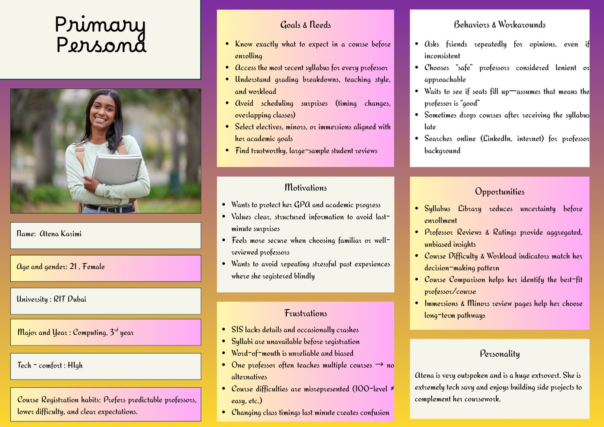
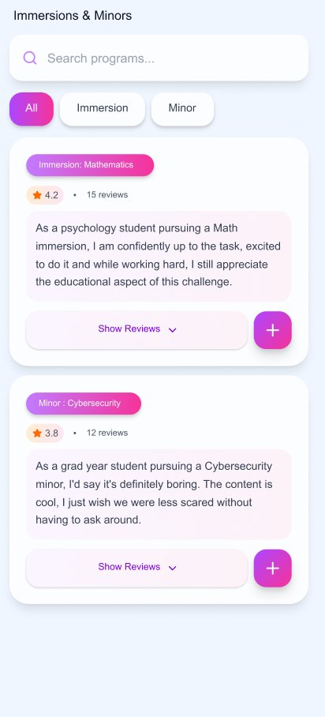
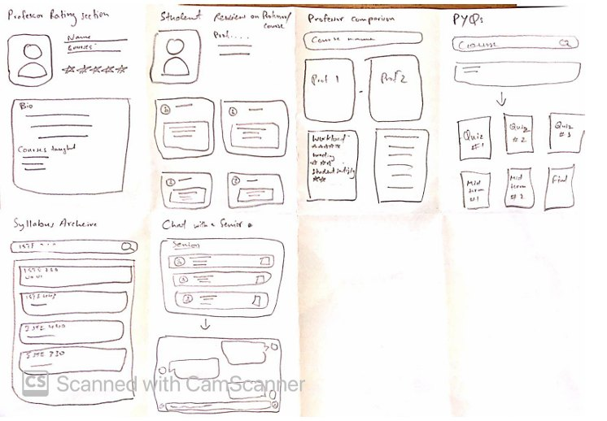
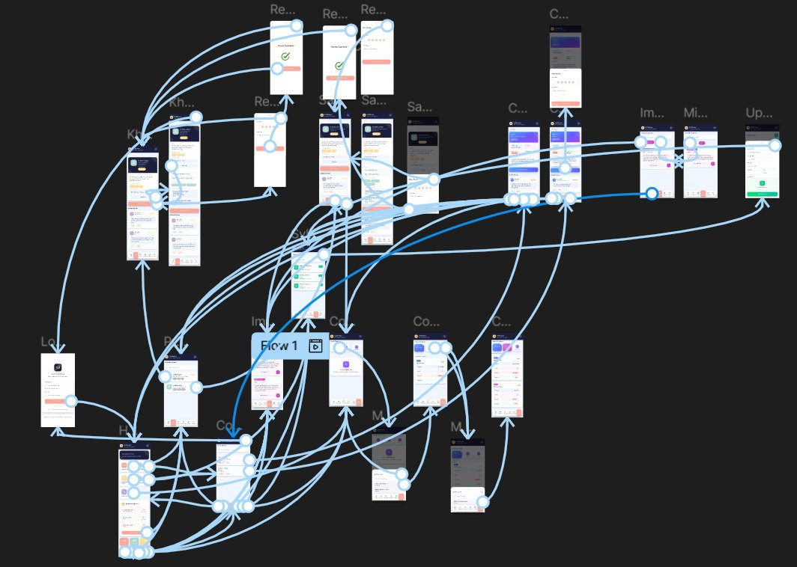

In one line — a student-centred app that helps RIT Dubai undergraduates choose courses, professors, minors and immersions with verified peer reviews and early access to syllabi.
RIT Dubai students register “blind”: no syllabi before enrolling, thin course info and conflicting advice in WhatsApp groups.
Ran semi-structured interviews, affinity-mapped the findings into four themes, built the persona and journey map, then designed and tested the Figma prototype.
100% task completion, 4.7/5 ease of use and 1 error in 20 attempts across 4 participants.
01 — The problem
RIT Dubai students choose courses and professors with almost no reliable information. SIS shows only a short course description, syllabi arrive after the semester starts, and advice comes from WhatsApp threads that contradict each other.
Academic planning shapes students’ stress, confidence and long-term success. Without trustworthy, structured information they misjudge workload, make scheduling mistakes and drop courses weeks in. Freshmen and sophomores are hit hardest, along with anyone picking a minor or immersion, and the pressure peaks in the last-minute rush of registration week.
02 — Research: what students told us
Mostly in-person semi-structured interviews (10 questions) with undergraduates in psychology, engineering and computing who had each registered at least twice. Responses were coded, affinity-clustered and turned into themes.
“Wish I had the syllabus before enrolling.”
“I rely on friends — not always reliable.”
“Comfortable sharing, if it’s anonymous.”
“Navigation of SIS is slow and, overall, bad.”

03 — The solution
A single home screen routes to five services, replacing the SIS + WhatsApp + Excel + Google Drive patchwork. Each one maps straight to a research theme, so students can decide early and on evidence rather than reputation.
Professor profiles with background, courses taught and star ratings, plus anonymous reviews of teaching style, difficulty and workload.
Student-uploaded syllabi, versioned by semester and professor, available before registration opens.
Up to three courses side by side by professor, credits, difficulty and average grade, which no RIT platform offered.
Filterable student experiences covering workload, course sequence and Dubai vs. New York availability.

04 — Design & prototype
We borrowed its scannable cards and star ratings but went further. It has no course-level insight or syllabi, its reviews are unverified, and its UI feels cluttered. We added professor background, courses taught and structured difficulty and workload indicators.
Cross-industry inspiration for modular home tiles, rounded cards and consistent icons. Large tiles make categories easy to find and calm decision anxiety, while consistent spacing, shadows and corners keep things comfortable.
Clean sans-serif type that scans well on mobile, large text for key areas, and light neutral backgrounds. Coloured chips and badges allow quick comparison, and high-contrast ratings stay visible. A persistent bottom nav links every page.


05 — Outcome
Task completion across all 5 usability tasks
Average ease-of-use rating
Error across 20 task attempts (4 participants × 5 tasks)
Time on task, from finding a page to posting a review
A unified, high-fidelity Figma prototype: a home hub, professor and course reviews, immersions and minors, a syllabus library and course comparison. After testing and heuristic review we improved visibility and hierarchy, made card and colour styles consistent, strengthened feedback and reduced cognitive load.
User research surfaces needs designers overlook, and iterative testing is essential. Simple UI patterns beat complex ones, and Nielsen’s heuristics and WCAG are powerful tools for testing a design. I also got better at turning qualitative pain points into concrete design requirements.
Fix accessibility gaps from our WCAG audit: raise contrast where white text sits on pink (1.4.3), enlarge touch targets to 44×44 px (2.5.5) and label the star-rating input (3.3.2). Also separate syllabus entries from reviews with clearer icons and “View syllabus” labels.
06 — Explore the project
Press Play in Figma to run the prototype. These are the flows we tested: